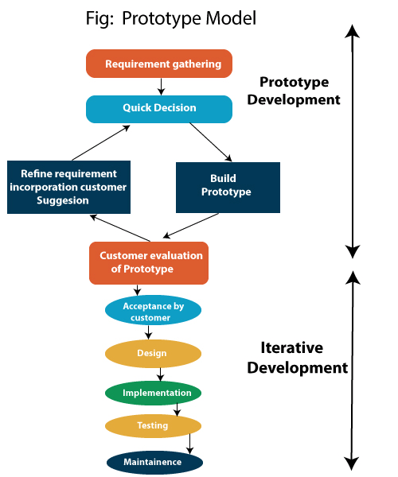

Prototyping
Prototüübi mudel eeldab, et enne tegeliku tarkvaraarendusega alustamist tuleks süsteemi töötav prototüüp luua. Prototüüp on süsteemi mänguline rakendamine. Prototüüp osutub tavaliselt väga lihtsaks versiooniks tegelikust süsteemist, millel võivad olla piiratud funktsionaalsed võimalused, madal usaldusväärsus ja ebatõhus jõudlus võrreldes tegeliku tarkvaraga. Paljudel juhtudel on kliendil ainult üldine ettekujutus sellest, mida oodatakse tarkvaratootelt. Sellises olukorras, kus puuduvad üksikasjalikud andmed süsteemi sisendi, töötlemisvajaduste ja väljundnõuete kohta, võib kasutada prototüübi mudelit.

Prototype Model'i sammud:
- Nõuete kogumine ja analüüs
- Kiired otsused
- Prototüübi ehitamine
- Hindamine või kasutajate hindamine
- Prototüübi täiustamine
- Tootmise insenerimine
Prototype Model'i eelised:
- Vähendab valede kasutajanõuete riski
- Sobib hästi olukordades, kus nõuded muutuvad/mitte kindlad
- Regulaarne nähtav protsess toetab juhtimist
- Toetab varajast toote turundust
- Vähendab hoolduskulusid
- Vigu on võimalik avastada palju varem, kuna süsteem luuakse kõrvuti.
Prototype Model'i puudused:
- Ebastabiilne/halvasti rakendatud prototüüp muutub sageli lõpp-tooteks
- Nõuab ulatuslikku kliendikoostööd
- Kliendile lisakulud
- Vajab pühendunud klienti
- Raske lõpetada, kui klient taganeb
- Võib olla liiga kliendispetsiifiline, puudub lai turg
- Raske on teada, kui kaua projekt kestab
- Lihtne tagasi langeda koodi ja parandada ilma korraliku nõudeanalüüsi, disaini, kliendi hindamise ja tagasisideta
- Prototüüpimise tööriistad on kallid
- Prototüübi loomiseks on vaja spetsiaalseid tööriistu ja tehnikaid
- See on aeganõudev protsess.